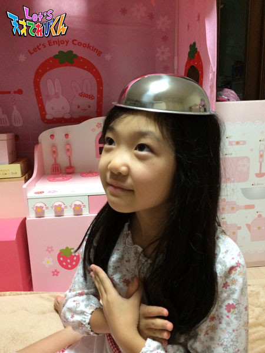

<<2014年9月 | トップページ | 2014年11月>>
2014年10月
最近知ってびっくりしたこと［笹原尚季］
こんにちは！笹原です☆
秋だから、涼しいはずなのに・・・なぜか、暑かったり、寒かったり。
みなさん、かぜをひかないように気をつけてくださいね(^^)
さて、今回のお題は、
『 最近知ってびっくりしたこと 』 です。
この間、ギネス世界記録の本を買ってもらいました。
すごーい分厚い本で、いろいろな世界記録がたくさん載っていました。
特にびっくりしたことは、すごーい背の高い人がいたことですW(`0`)W
身長は、なんと272cmもあったことです。
僕も背が高くなりたいなぁ！
あとはこの間、僕のぬいぐるみにピッタリのお家がありました。
でも、それは家の形をしたポストでした(^^)
ピッタリのサイズでびっくりW(`0`)W
投稿者:笹原尚季 | 投稿時間:18時45分 | カテゴリ：てれび戦士 | 固定リンク
最近知ってびっくりしたこと［杉本瑛］
みなさん、こんにちワン！杉本瑛です。
この前、孫の日だったので、
おじいちゃん・おばあちゃんに、おもちゃを買ってもらいました(^-^)/
早速、おもちゃで遊びました！

↑↑↑フランシスコ・ザビエル（笑）
今回のお題は、 『 最近知ってびっくりしたこと 』 です。
それは…お琴の基本の音階には、レとソがないことです。
だから、【 ミラシドミファラシドミファラシ 】なんです！
これを平調子というそうです。
知ってました？
平調子は、和風な曲を弾くのに向いているので、
練習1日目で 『 さくら 』 が弾けるようになったんです！
お琴は爪を付けて弾くんですよ。
私には、Sサイズでも少し大きいです。
弾いていると、たまに取れそうになるけど頑張ります☆
投稿者:杉本瑛 | 投稿時間:18時54分 | カテゴリ：てれび戦士 | 固定リンク
最近知ってびっくりしたこと［小澤竜心］
こんにちは！竜心です。
もう、すっかり秋ですね…
今日は、 『 最近知ってびっくりしたこと 』 を教えちゃいますー！
みなさんは、10月10日が何の日かを知ってますか！？
答えは… 『 銭湯の日 』 です。
【 1010 】で、【 せんとう⇒銭湯 】
ぼくの大好きな銭湯の日があるなんてー＼(^o^)／びっくりです。
では、ほかにどんな日があるのでしょうか～！？
ぼくが生まれる前は、10月10日が 『 体育の日 』 だったんだって！
知らなかったー。
そこで、調べてみました。
この日は、1964年に東京オリンピックの開会式があった日なんです。
でも、ぼくが生まれる前にハッピーマンデーっていう制度で
10月の第2月曜日に変わったんだって！
ほかにも
☆ 『 成人の日 』 は、
1月15日→1月の第2月曜日
☆ 『 海の日 』 は、
7月20日→7月の第3月曜日
☆ 『 敬老の日 』 は、
9月15日→9月の第3月曜日
変わっちゃった祝日が、こんなにあってびっくりしました！
課長たちがいる未来のカレンダーも違うのかな！？
それからね、2016年には8月11日が 『 山の日 』 で祝日になるそうです。
うれしいな～♪
あれ？でも、夏休み中か。。。f(^_^;)
ちなみに 『 歌舞伎の日 』 は、2月20日です。
出雲の阿国(いずものおくに)が、
江戸城で将軍や大名の前で、初めて歌舞伎踊りをひろうした日を記念しているそうです。
祝日じゃないけど、歌舞伎の記念日があってうれしいなー＼(^o^)／
投稿者:小澤竜心 | 投稿時間:18時45分 | カテゴリ：てれび戦士 | 固定リンク
今、挑戦したいことは...［飯島緋梨］
こんにちは。
飯島緋梨です。
今回のテーマは、『今、挑戦したいことは…』です。
緋梨は、学校の授業で図工がいちばん好きです。
物を作ることが楽しいからです。
図工クラブに入っていて、
下の写真は、お茶わんを作っているところです。
完成したお茶わんは、焼いたら色が変わって、深い緑色になりました。
今度は、ろくろを使って作ってみたいです。
夏休みに、おばあちゃんに教えてもらい、
牛乳パックのカゴとネコのマスコットを作って、自由研究の作品にしました(^_^)
おばあちゃんは、折り紙もじょうずなので、
まだまだ教えてもらいたいことがいっぱいです(^_^)
投稿者:飯島緋梨 | 投稿時間:18時45分 | カテゴリ：てれび戦士 | 固定リンク
今、挑戦したいことは...［林武尊］
こんにちは、林武尊です。
この前、2泊3日で移動教室がありました。
たくさん歩いて少し疲れたけど、
キャンプファイヤーやガラスアートなど、
いつも経験しないことをみんなでできて、楽しかったー♪
さて、今回のお題。
『今、挑戦したいことは…』
ぼくが今、挑戦したいことは、いろいろあります。
☆将棋で強い人と戦う！
☆自分のお店を出す！
☆アニメのアフレコ！
などなど
その中でも、いちばん挑戦してみたいことは、
テニスプレーヤーのにしこり選手のサーブやエアKを実感したい！
ぼくは、テニスを習っていて、にしこり選手にすごくあこがれています（≧∇≦）
多分、ものすごく速くて強くて受けられないかもしれないけど…
でも、ぜひぜひ挑戦したい！
にしこり選手のサーブやエアKを打ち返すことが、ぼくの挑戦です！
投稿者:林武尊 | 投稿時間:18時45分 | カテゴリ：てれび戦士 | 固定リンク
今、挑戦したいことは...［杉本瑛］
皆さま、ごきげんよう！杉本瑛です。
季節は、秋！そう、芸術の秋☆
ということで、
私は、ある曲をマリンバで練習し始めました。
動画で歌を聴いて、
眠りについてしまいそうな穏やかで優しいメロディーが気に入ったので、
音を取ってマリンバの曲にしてみました。
なめらかに弾けるように頑張ります！
今回のお題！
『今、挑戦したいことは・・・』
それは・・・・・・
【殺陣（たて）】です☆
殺陣とは、時代劇などでの刃物を使った立ち回りのことです。
なぜやろうと思ったのかというと、
以前、ある女優さんが剣を2本使って殺陣をしているのを見て感動して、
私もこんなふうにできたら、カッコいいだろうなと思ったからです。
いつか舞台で、みなさんに生で見ていただけるように頑張ります！
投稿者:杉本瑛 | 投稿時間:18時45分 | カテゴリ：てれび戦士 | 固定リンク
今、挑戦したいことは...［瀧澤翼］
最近、朝が寒くなってきて、布団が恋しくてたまらない瀧澤翼です)^o^(
僕が今、挑戦したいことは～、なんと【英検】でーす！！
実は、大好きなダンス以外に英会話教室にも通ってるんです。
まだ5級にもチャレンジしていないので
【英検】の壁がどれだけ高いのか、全くわかりませんが、
中学3年生までには、英検2級を絶対にとりたいと思ってます！
15歳になる前に、英語がうまく話せる俳優になっていたいので、
目標は高いけど英検2級にチャレンジします！！
頑張るっきゃない！！
そして、もうひとつ・・・
秋といえば、スポーツの秋！
というわけで、友達とボウリングに行ってきました。
しかし・・・久しぶりということもあり、ガター連発・・・(￣▽￣;)
最高スコアが90点でした。
ん～、いまひとつ（汗）
次は、100点超えにチャレンジだー！！
よーし！英検合格・ボウリング100点超えを目指して～
Let's！English & ボウリング！
投稿者:瀧澤翼 | 投稿時間:18時45分 | カテゴリ：てれび戦士 | 固定リンク
今、挑戦したいことは...［赤崎月香］
こんにちは ヽ(^▽^@)ノ
赤崎月香です。
13歳になりましたー♪ヾ(〃^∇^)ノ♪
てれび戦士のみんなや、
スタッフのみなさんにお祝いしてもらいました。
茶の間戦士のみんなからもお手紙もたくさん届いたし、
とっても嬉しかったです！！！
★あ(^-^) り(-^ ) が( ) と( ^-) う＼(^0^)/★
☆。・:*:・°★,。・:*:・°☆
お誕生日に家族でしゃぶしゃぶに行きました♪
焼肉もいいけど、しゃぶしゃぶもおいしいねーーー
たくさん食べて、お腹がパンパンになりました(^-^;
リクエストしたプレゼントもゲットできたし♪
お誕生日って、最高ーーーーー♪ヾ(≧▽≦)o ひゃっはっはっ！！
☆。・:*:・°★,。・:*:・°☆
よしっ！13歳になったことだし、
いろいろなことにチャレンジしてみよう！
『今、挑戦したいこと』
① 【ホノルルマラソンに出場したい！】
走ることが好きなので、フルマラソンに挑戦してみたいです。
海外旅行にも行けるし♪,,,,,,,,,,,,(((( *≧∇)ノノノ
どこまで頑張れるか、走ってみたいなぁ～
② 【絶叫マシーンに乗ってみたい！】
いや・・・乗ってみたくない・・・( p_q)
①と②どっちが挑戦しやすいか？
②かなぁ？
高いところから一気に落ちたり、
グルグル回ったり、グネグネしたり、
怖い！！！怖すぎる！！！o(;-_-;)o
勇気を出して、列に並んだことはあるんだけど、
やっぱり、無理！！！
怖いもん
でも、いつか両手を上げて乗ってみたいです。＼(≧∇≦)/
いや・・・やっぱり、乗れなくてもいいかなぁ・・・
☆。・:*:・°★,。・:*:・°☆
秋ですね～
葉っぱの色がきれいだし、おいしいものがたくさん♪
少し寒くなってきたので、風邪ひかないように
またね～ヾ(*'-'*)
投稿者:赤崎月香 | 投稿時間:18時45分 | カテゴリ：てれび戦士 | 固定リンク
今、挑戦したいことは...［小澤竜心］
こんにちは！竜心です。
この前、佐藤健さんが出ている時代劇の映画を観ました。
戦いのシーンが、すごくカッコよかったです。
そこで、ぼくが今、いちばん挑戦したいのは、
【 殺陣（たて）】です。
殺陣ができるようになって、時代劇とか、アクション映画に出て、
カッコいい立ち回りをみせられるようになりたいです。
そのために、たくさん映画や舞台を観て、
『侍』の研究をしたいと思います。
それから、今習っているダンスのレッスンや、
少林寺拳法の修行で、キレのあるしっかりした体づくりをがんばります！
【 居合（いあい） 】にも挑戦したいけど、
それは、まだちょっと先かな～。
いろいろとやりたいことはあるけど、
ひとつひとつ、がんばるぞーo(^o^)o
投稿者:小澤竜心 | 投稿時間:18時45分 | カテゴリ：てれび戦士 | 固定リンク
今、挑戦したいことは...［桐畑カレン］
こんにちは。カレンです(*^^*)
今、体育の授業でサッカーをしています。
千葉県でゾウのランディさんとサッカー対決したのを見てくれたお友達から、
「カレンちゃん、ボールをけるときは助走するんだよ」
と教えてもらいました。
しっかり覚えて、さっそく助走をしたら…
けるタイミングが分からなくなって、
ボールの上に足がのっかり、スッテーンと転んでしまいました(>_<)
「助走」は、なかなか難しいですね(^_^ゞ
そんな私が、今挑戦したいこと…
それは、
その①【とび箱を華麗にとびたい！】です。
華麗がポイント！
そんなとび箱も助走が必要です。
助走して、いざとぶときのタイミングが分かりません。
とび箱にぶつかったり、途中でおしりをドシン！と、ついてしまいます(>_<)
とび箱は、どうして縦に長いのかな？
縦が短かったら助走なしでタイヤ飛びみたいにとべる気がする…
とか、頭の中でグルグル考えています(-_-)
「ル～ベトコバビト～！」
なんて、呪文をとなえて、とべたらいいのにな(^^)
魔法界で修行してこようかな？！
なんて考えたりもしたけど、
それより…練習・努力ですね(￣▽￣;)
そして、
その②【月をお散歩してみたい！】です。
月をお散歩してみたいな。
自分の足あとを残してみたいです。
こ～んな風に！！
投稿者:桐畑カレン | 投稿時間:18時45分 | カテゴリ：てれび戦士 | 固定リンク
今、挑戦したいことは...［笹原尚季］
こんにちは、尚季です。
この前、先輩のゆいさんとソーズビーくんがLet'sのみんなに会いに来てくれました！
2人とも背が高くて優しくて、カッコよかったです(^^)
あこがれの先ぱいです☆
それでは、本題に入りますね！
今回は、『今、挑戦したいことは....』です☆
今、僕が挑戦したいことは、
ベルトで変身してモンスターを倒すアクション俳優になるために、
一生けんめいがんばることです。
ほかにも、そろばんで計算を上達させることとか！
僕は、そろばんで計算をするより、
頭の中のそろばんで計算するほうが得意なので、暗算10段を取りたいです。
今はまだ3段だけど、がんばるぞ～(^_^)v
投稿者:笹原尚季 | 投稿時間:18時45分 | カテゴリ：てれび戦士 | 固定リンク
今、挑戦したいことは...［齋藤茉日］
こんにちは(^-^)/
茉日です^ ^
だんだんと季節も変わってきて、涼しくなってきましたね～
たまに肌寒いこともありますね～
私は風邪をひかないようマスクをつけて出かけるように、心がけています(^-^)/
みなさんも風邪をひかないようにしてくださいね～
みなさんは、『挑戦したいこと』は、ありますか？？
私は、最近「ニュースキャスター」に挑戦してみたいな～っと思っています^ ^
ニュースキャスターといえば、
自分の考えよりも真実をハキハキとわかりやすく噛まずに、しっかりと視聴者に伝える。
というところが、カッコいいと思っています(^-^)/
天てれの中でいうと。。。。
虎南分析官！
実は、私の憧れの人の1人(o^^o)
きれいでステキで、どちゃもんの居場所や新しい情報を伝える。
んーーー、ステキですね(^-^)/
虎南さん目指して、てれび戦士がんばります！笑
それでは、また(^-^)/ Let's！
投稿者:齋藤茉日 | 投稿時間:18時54分 | カテゴリ：てれび戦士 | 固定リンク
今、挑戦したいことは...［小西憧弥］
こんにちは～！身長134cmになった憧弥でーす！
この前、さつま芋をもらったからスイートポテトを作りました！
…って言っても、ほとんどお姉ちゃんがしてくれて、
憧弥は混ぜたり、つぶしたりしただけー(^_^)（笑）
すごーくおいしかったよ！
また、昨日さつま芋をもらったから、休みになったらお姉ちゃんと作るんだー（≧∇≦）
そうだ、もうすぐ運動会があります！
「綱引き」と「組体操」と「徒競走」
頑張ります(^_^)v
今回のお題は、『今、挑戦したいことは…』です。
ぼくのお父さんは、バイクに乗るからアマチュア無線の免許を持っています。
みんなでバイクに乗って走るときに便利なんだって。
その免許の子供用があるみたいだから、
今は、その免許に挑戦してみたいなーって考えてます！
釣りとかスキーにも、便利でしょ(^^)
無線ってトランシーバーみたいで、かっこいいんだよ！
でもテストを受けるとき、チョー緊張しそー！
その前に勉強しなくちゃなー（笑）
投稿者:小西憧弥 | 投稿時間:18時45分 | カテゴリ：てれび戦士 | 固定リンク
今、挑戦したいことは...［原田明莉］
★Hello★
だーはら こと 原田ですっ
最近、強い先輩が道場にきてから
メチャクチャ空手に燃えてます！
その先輩に強くなる方法などを聞いて、練習で挑戦してみたりしてるんです！
やってみると、けーっこう難しいんですが、
そのためにイメトレとかしっかりして、空手の勉強をしています！
学校の勉強も
しないとですね笑 (･･;)
とゆーことで、今回のお題は、
『今、挑戦したいことは…』ですっ
やっぱり、それは強くなるために難しい技に挑戦です！！
練習だけではなく、試合でもおちついてできるくらいにしておきたいです、絶対！！
★これが第1に挑戦したいこと★
（したいこと！というより、するところ！！）

あとは、食欲の秋なので、
だーい好きな★チーズケーキ作り★にも挑戦したいです！
自分の好物を自分で好きなだけ作れるなんて（≧∇≦）
書いてる今も
早くも挑戦したい気分で
私の心は燃え上がってます！
★Let's Challenge★
投稿者:原田明莉 | 投稿時間:18時45分 | カテゴリ：てれび戦士 | 固定リンク
今、挑戦したいことは...［辻村晃佑］
ぼくは、オリジナルの飲み物作りに挑戦したいです！
レストランにあるような料理を作りたいと思っています。
その中でも、特に飲み物を作ってみたいんです。
どの材料とどの材料が合うか、どんなお菓子と合うのか、
想像するだけで楽しいですヾ(*´∀｀*)ﾉ
想像だけじゃだめなので、アイデアをこのメモ帳にメモってます。
Let's ジュース作り！
でも、ミキサーがないんだよな～(´・ω・｀)
まずは、そこからだ！ヽ(`Д´)ﾉ
投稿者:辻村晃佑 | 投稿時間:18時45分 | カテゴリ：てれび戦士 | 固定リンク
これを食べているときが幸せ！［杉本瑛］
ニーハオ！杉本瑛です！
みなさん、いかがお過ごしですか？
今回のお題。
それは、『これを食べているときが幸せ！』
私は、北京生まれなので、北京ダックが好きです。
北京ダックは、ダックとテンメンジャンという甘いお味噌と
ネギ・キュウリなどの細切り野菜をクレープみたいな皮で包んで食べます。
私は、ダックのお肉まで食べられる北京式のほうが好きだなぁ。
焼きあがったダックをワゴンで運んできて、目の前で切ってくれるのも楽しいです。
でも、日本ではダックの皮だけを出す香港式が一般的ですよね。
残念。
なので、日本でもたくさん食べられている餃子にします。
焼き餃子は、
外はパリっ☆ 中はジューシー♪の
ハーモニーが、とってもおいしくって大好きなんです！
そして、私は風邪を引いたときに、必ず水餃子を食べたくなります。
体が暖かくなって、幸せになるからです。
中国では、餃子は家庭で皮から作ります。
北京にいたとき、家政婦の李さんといつも一緒に餃子を作っていました。
日本に帰国してからも、毎年北京に行って、
パパのお友達のお家で一緒に作らせてもらってます。
私にとって、餃子は心安らぐ故郷の味なんです。
投稿者:杉本瑛 | 投稿時間:18時45分 | カテゴリ：てれび戦士 | 固定リンク
これを食べているときが幸せ！［笹原尚季］
笹原です♪
こんにちは *･゜ﾟ･*:.｡..｡.:*･'(*ﾟ▽ﾟ*)'･*:.｡. .｡.:*･゜ﾟ･*
もう夏休みも終わって、バリバリ学校生活です。
転校生もいて、すごい仲良しになりました☆
今回のお題は、『これを食べているときが幸せ！』です！
僕は、ポテトにソフトクリームをつけて食べるのが大好きです！
にやにや にやり♪♪♪
お兄ちゃんには、え！って驚かれるけど、幸せ～(^^)
ほかにも梅干しとか、おやつのコンブとか、スルメイカもすごくおいしいです。
収録の間に、みんなでワイワイ食べるのも楽しくて幸せ～です☆
投稿者:笹原尚季 | 投稿時間:18時54分 | カテゴリ：てれび戦士 | 固定リンク
これを食べているときが幸せ！［桐畑カレン］
こんにちは。
10歳にみえない…といわれるけど、本当に10歳になったカレンです(*^^*)
今回のお題、『これを食べているときが幸せ！』です。
おやつを食べているときは、いつも「幸せ～」なんですが、
ちょうどこの前、レストランに行ったときのお話です。
お食事のあと、きれいな銀色のトレイにのってケーキたちが出てきました。
その中から、好きなケーキを選べたんです。
やった～～！！
もちろん、全種類お願いしました！
一応いっておくと、サイズはプチサイズです(^-^;
だから、食べすぎではないです。多分…(^-^;
こんな風にかわいいケーキたちがお皿にのってやってくるなんて、
そして、ペロリと食べられたとき、本当に幸せ>^_^<だなあと思いました。
でも、やっぱり「お母さんの作ったご飯を食べているとき」が、いちばん(^^)かなと思います。
毎日、いろいろ考えて作ってくれます。
苦手なものがでると、残すこともあるけど（ごめんなさい）、
お母さんが作ってくれるシンプルな和食が好きです！
お夕食を食べながら、今日あったことを話しているときが幸せです(*^^*)
投稿者:桐畑カレン | 投稿時間:18時45分 | カテゴリ：てれび戦士 | 固定リンク
これを食べているときが幸せ！［小澤竜心］
こんにちは！竜心です。
今日は、サッカーの練習でした。
ぼくが幸せを感じるのは、
なんといっても、運動したあとのグビグビ飲む『 お水 』。
体の中を水が流れるのがよくわかります。
やっぱり、お水がいちばんおいしい～＼(^o^)／
そして、水分補給って大切！
ぼく達、子供の体って70％は水分なんだってー。
あと、タンパク質も大切！
お肉も大好きだけど、最近よく食べるのが脂肪が少ないお魚。
『お寿司』が大好き～＼(^o^)／
回転寿司屋さんで、好きなお寿司が回ってくるのを
ワクワクしながら待ってるのも注文するのも、どっちも好き。
もちろん、わさび抜きでね。
そして、お寿司の中でぼくが好きなのは、マグロです。
好きなものを食べられるって、本当に幸せなことだと思います。
感謝して、今日もいただきま～す。
投稿者:小澤竜心 | 投稿時間:18時45分 | カテゴリ：てれび戦士 | 固定リンク
これを食べているときが幸せ！［齋藤茉日］
こんにちは～
茉日です。
最近、バランスボールにはまっています！
いろんなことができますよ～
今では私、バランスボールの上に立てるようになりました～
ちょっと危ないですね～
ーーーーーーー本題へーーーーーーー
皆さんは、『これを食べているときが幸せ！』
という食べ物や飲み物は、
ありますか？
私は、今年の誕生日プレゼントがスムージーミキサーだったので、
それを使って、スムージーを飲む時間が幸せな時間～(^-^)/
確か、前のブログに去年（？）の誕生日プレゼントを書いて載せたときも
キッチングッズだったっけ～
キッチングッズ、多いな～
と、今書きながら思っております～
で、作り方もいたって簡単で果物を切って、水をいれて。。。
「うぶぃーーーーーーーーーーーーーーーーーーーーーーーん」
と、ミキサーにかけるだけ♪
簡単ですね！
このジュースを毎朝、飲んで出かけます！
なので、私は毎朝、幸せです(^-^)/
幸せな時間があると1日、明るく過ごせますよ～
さようなら～(^-^)/
投稿者:齋藤茉日 | 投稿時間:18時45分 | カテゴリ：てれび戦士 | 固定リンク
これを食べているときが幸せ！［林武尊］
こんにちは、林武尊です。
この前、にしこり選手の決勝戦をテレビでみました。
相手のチリッチ選手に負けてしまって、すごく悔しかったです。
でも、にしこり選手が世界8位になったことは、本当にすごいと思いました。
さて本題へ。
ぼくが食べて幸せになるものは、
★ジャガイモのおみそ汁
★キュウリの浅漬け
★おばあちゃんの漬けたらっきょうなど
いろいろありますが、
その中でも特に好きなのが、ビーフジャーキーやあたりめなどの【かわきもの】です。
特に理由はないけど、ただおいしいから、幸せになるんです（≧∇≦）
でも、ときどき傷つくのが、なぜかぼくは将来、酒飲みになると言われることです。T_T
ぼくは、酒飲みになりたくない！
なので、大人になっても、多分お酒を飲まないと思います。
飲んでも、飲み過ぎないように注意をしてると思います！
投稿者:林武尊 | 投稿時間:18時45分 | カテゴリ：てれび戦士 | 固定リンク
これを食べているときが幸せ！［赤崎月香］
こんにちは ヽ(^▽^@)ノ
赤崎月香です。
みなさん、見ましたか？
！！！！！スーパームーン！！！！！
きれいでしたね♪ (*￣。￣*)
このきれいな月を写真に撮りたい！！！
ということで、がんばって撮影してみました～♪
正直にいうと、わたしは全然きれいに撮れなくて、
何回撮っても、お月様が真っ白になっちゃって・・・(-"-;)
お父さんに手伝ってもらって撮影しました。
クレーターまで撮れました♪
やった～（オマケ付き♪）
竜心のかわいいお月様みたいな頭～♪
(*--)ヾ(￣▽￣*) なでなで～
☆。・:*:・°★,。・:*:・°☆
月といえば！！！ 月香！！！←無理やり(*ノ∇)ゝ
名前に「月」という字があるので、
うちには、月の形をしたものがたくさんあります♪
少し紹介しますね～
ほかにもお皿とか、指輪とか、いろいろあります。
お買い物に行ったり、おみやげで見つけたりすると、
つい買ってしまいます～
☆。・:*:・°★,。・:*:・°☆
あっ！！！ 忘れてた！！！ (*。◇。)
今日は、『これを食べているときが幸せ！』です。
うーん・・・ うーん・・・ o(´^｀)o
たくさん、ありすぎるなぁ・・・
おいしいものを食べてるときは、とにかく幸せです♪
いつもより、よけいにニヤニヤします。
好きな食べ物は、ピザとチーズとお抹茶と
じゃーーーーーん！！！
焼き肉、大好きーーーーー(⌒□⌒*)
月に2・3回は、焼き肉を食べに行きます。
タン・ハラミ・カルビ 全部好きー
わーーーーーっ
焼き肉、食べたくなるーーーーー
お肉がジュージュー焼ける音がいいね～
焼き肉を食べながら、家族でいろんなお話をします。
勉強のこと、学校のこと、天てれのこと、
「あっ！わたしのお肉とったっ！」とか言いながら、
＝焼肉家族会議＝(*≧ｍ≦*)
盛り上がります☆彡
☆。・:*:・°★,。・:*:・°☆
・・・・・・しまった！！！(￣□|||| 女の子らしく、
「えっと～、プリンとか食べると幸せ～♪」
とか言っとけば、よかったかなぁ・・・
まっ いっか～
プリンもパフェもマドレーヌも
大好きです！！！（遅っ）
またね～ヾ(*'-'*)
投稿者:赤崎月香 | 投稿時間:18時54分 | カテゴリ：てれび戦士 | 固定リンク
これを食べているときが幸せ！［辻村晃佑］
今回は、『これを食べているときが幸せ！』かー(・∀・)
ふっふっふっ・・・
たくさんありすぎて、困っちゃうなー(*´ω｀*)
まずは、お母さんが作る鶏の甘酢煮かな～ヽ(*´∀｀)ノ
お母さんの気分で梅干が入ることもあります。
鶏の甘酢煮は、鶏のもも肉に甘酸っぱいタレがからんで、すごくおいしいです。
タレは、生野菜にも合います。
そして、食後のデザートはぶどうだーーーヽ(`Д´)ﾉ
大きくてコクがある巨峰も、小さくて甘味のあるデラウェアも、ぼくは大好きです。
もちろん、マスカットもね。
晩ご飯で鶏の甘酢煮が出て、食後のデザートでぶどうが出たら、
最高に幸せでーす！ヾ(*´∀｀*)ﾉ
飲み物は、もちろんウーロン茶で！
投稿者:辻村晃佑 | 投稿時間:18時45分 | カテゴリ：てれび戦士 | 固定リンク
ページの一番上へ▲